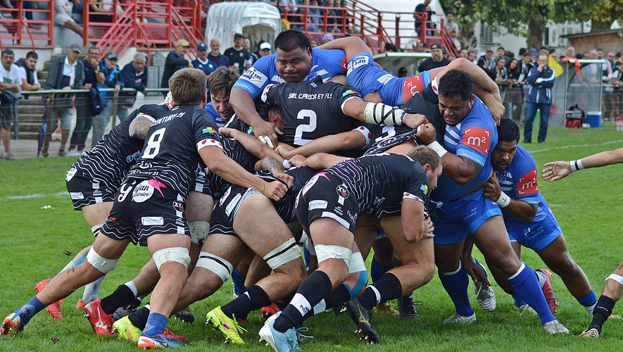
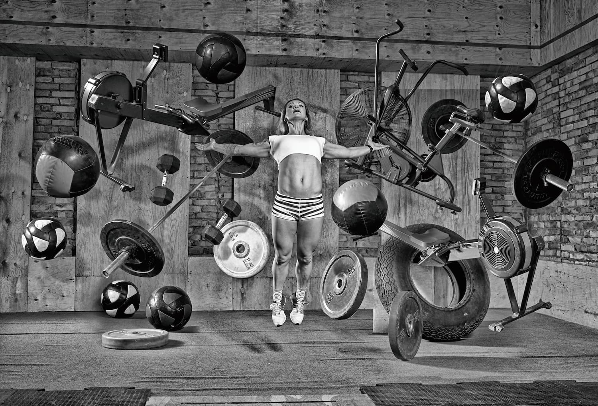

FOOT
Le football est l'un des sports les plus populaires en France. La fédération régionale bénéficie d'infrastructures modernes pour la formation et les compétitions.
Visiter la fédération de Football
La M2L propose divers services pour accompagner les ligues sportives dans leur gestion administrative, logistique et organisationnelle. Nous offrons également des espaces de coworking, des salles de réunion et un soutien juridique pour les associations sportives affiliées.
Nous hébergeons plusieurs structures sportives régionales, allant des fédérations de football, rugby, tennis, et bien d'autres disciplines. Chaque structure bénéficie de nos installations modernes pour faciliter leurs activités.
Le football est l'un des sports les plus populaires en France. La fédération régionale bénéficie d'infrastructures modernes pour la formation et les compétitions.
Visiter la fédération de Football
Le rugby a une grande histoire en Lorraine, et la fédération régionale utilise nos installations pour les événements sportifs et les entraînements de haut niveau.
Visiter la fédération de Rugby Le crossfit est de plus en plus populaire, et notre centre héberge régulièrement des compétitions et des formations pour les athlètes locaux.
Visiter la fédération de Crossfit 